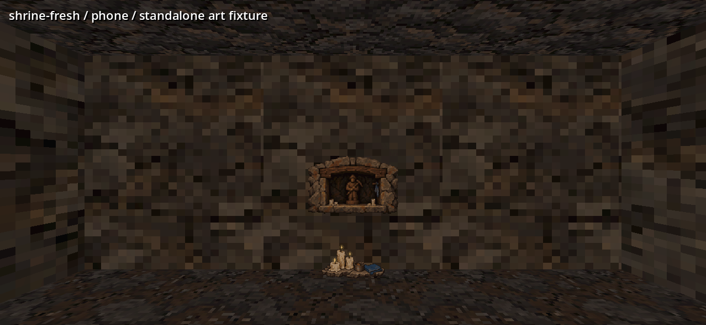

Roots and a buried royal cache for the cave; a miners’ shrine with a spent state. Select a piece to inspect its native pixels.
Shrine offerings
Mounted in the cave

Actual Godot 4.7.2 captures from an isolated room. The scene scale uses 2 m cells and 2.4 m walls. These new scenery sets await live placement.
The cairn replaces the diamond on the corner map, full map and Discoveries list.